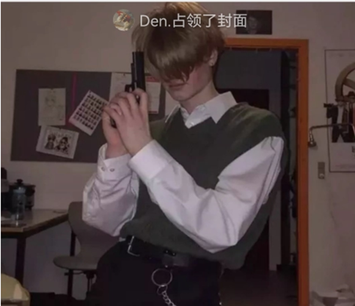
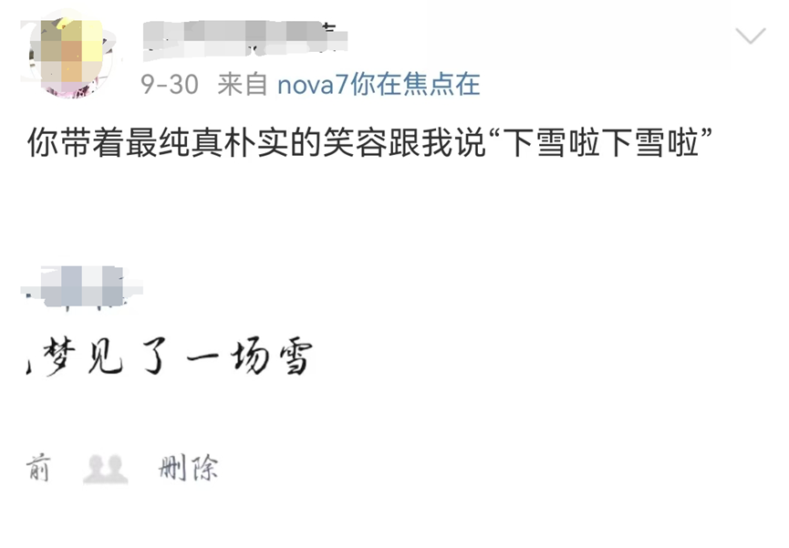
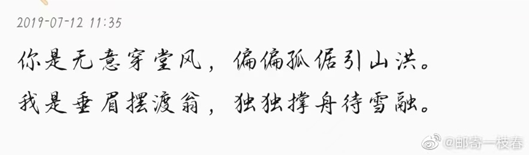

有这样一句话，步入社会，就很难找到真爱了。
一方面年龄增长，兴趣爱好会千差万别；
另一方面，考量会越来越多，防备心会越来越重。
可我偏不信，遂把自身婚恋观公布于此，
省去互相试探，逐步了解的时间。
以下所有文字均为我刘浩然本人真实想法，
如有异见也可妥协：😛
1️⃣ 为什么会有这种想法？
谈到这个必须介绍一下自身情感经历，
本人母胎solo，但失败经验却数不胜数，
我跟我妈说我感情经历我妈说我可能有“锁”（封建迷信💩）。
我初中从农村走后门到了县城读书，
心中敏感自卑，初中三年基本就是学习，
下课不出教室，暗恋过几个人，也不了了之。
就在初三认识一位女性同桌，
当时她有男朋友但是我们挺聊得来，
她考上高中和男朋友分手那段时间有自杀倾向，
当时我们经常聊天算是红颜知己，
但是到了大二就基本不联系了。
到了高一，当时特别幻想爱情，
被一个爱钓鱼的女生搞暧昧
（动不动跟我眉来眼去，但是不在qq上聊天），
搞上头了，
一个学期都单方面跟那个女生发消息，
女生不回应、也不删好友。
学期末终于明白，她跟其他朋友都说我在骚扰她，
实际上她也在同时和好多男生聊骚搞暧昧。
我知道真相之后把事情原委都跟我们的共同朋友讲清楚，
她觉得我撕破脸了，
发qq空间挂我，至少有20多个人转发，把我说成是单相思，骚扰！
上面算是我的第一段情感经历，很痛苦。
阅读此篇的你也许不信，
怀疑我真是痴汉！骚扰！妄想症！
那我只能说，这种情感小故事只能建立在我说的话你都相信的基础上，
毕竟人情隔肚皮，谁也不知道那女的到底怎么想的。
有人说第一段情感经历会影响一个人后面的所有亲密关系，
也许正因如此，我一直单身且对情感关系格外慎重、防范。
我追求你你拒绝我完全可以，但我最忍受不了的就是被钓着，
只要有一点被钓的感觉我就立马脱钩！这件事也深深影响了我后面的人生态度，
初中就自认为自己适合学习哲学、心理学，
高二也顺势阅读哲学，
庄子、叔本华、尼采、加缪、萨特……
转眼到了高三，我们高二高三是物化地选科，
班里男生50多个，女生不及两位数。
应该是高三上学期，班里转来一个转校生A，
男生白白净净，学习成绩并不好，
经常跟班里的混子玩，他在之前的学校有女朋友。
我和他同时喜欢上了班里一个女生，
那个女生和男生A坐的较近，但认为男A有女朋友，
因此把他当朋友看待，玩得挺好，
男A当时已经被前女友给甩了，
但那个女生并不知道。
我当时在班里成绩挺好，样貌不算差，是物理课代表，
由于那个女生坐在第一排，我每次发试卷都会亲手递给她，
每次早读，我都故意走到女生跟前背书，
两个人就这样暗生情愫。
男A似乎察觉到了我和女生的暧昧关系，
他转而告诉了他在班里的混子朋友，
想让混子朋友恐吓我几句，让我知难而退。
一次在厕所洗脸，男A的朋友走过来说：
“刘浩然，学习不错啊，又考第一，
整天早读也不老实，乱走什么？”，
我当时又恼又气，同时想到了政治课本里的一句话：
“看问题要抓住主要矛盾”。
心想，追求女生成不成功，还是看女生的意愿，
便决定向女生说明当前的情况，
让她来决定选谁。
女生当时是住校，而且临近高考，
只有周末回家能登qq。
我在qq跟她说明了情况，
并说“如果你对我有意思，请表现出来，让那个男A知道。”
女生要一周后才能回消息。
那一周是极其煎熬的，
生怕放学路上那帮混混又跟我玩什么花招，
影响心情进而影响学习。
一周后，女生回复了消息，
果不其然只有冷冰冰的几个字，
“人家有对象！”。意思让我不要疑神疑鬼，不要多想。
当时我就下定决心，学习算了，
快高考了别整这些有的没的，
这种蠢女人不配拥有我！
你问男A真的对那女的有意思吗？
当然，后面女生终于察觉到男A的歪心思，
一直往我这边看，我没理。
男A气急败坏，主动晨读坐到女生边上，
这还不明显吗？
我虽然不喜欢那个女生了，但是仍然气不过，
每天晨读依然去那女生旁边站着！
后来其他男生也知道的这件事
（男A的那帮混子哥们传出去的），
晨读会帮我走到那个女生旁边，给我撑场子。
就这样，到了大学，其实大学没什么好讲的，
为了脱单追过两三个女生，加上联系方式聊几天，
感觉没什么意思，作罢。
但在大学只有一个女生我真动了心了。
那是在大二上学期，
社团的朋友把他女朋友的室友
（同一个学校，不同的校区，我在成都西南，她那个校区在成都东南）
介绍给我，说的给她介绍一个一米八的帅哥，
当我用的这个头像，
那个女生也把我幻想成长这样了，
这为后面的不愉快埋下了伏笔。

其实全程只聊了三天，但是聊的非常投机，
女生性格很开朗，我也属于北方那种开朗的性格，
基本没课的时候都在聊天，
晚上聊到很晚，有种相见恨晚的感觉。
女生的qq空间有很多自拍，我感觉女生不算漂亮，
但是跟我一样，侧颜比较方，跟我妈也挺像
（男的只要认为一个女生长得像妈妈那一定是有感觉，女的只要……爸爸……有感觉）。
那时候正好要放十一假期，
我想着十一假期找她玩，正好奔现。
可就在奔现的前一天，她突然说，
昨晚梦到我了，说什么都要让我给她发张自拍。
我当时不爱拍照，就把我身！份！证！上的头像发过去了，
发过去后女生久久没有回我，
然后我问了一句“见光死了吗”，
女生回了一句“对不起，你不是我喜欢的类型”。
故事到此结束💩。
事后，我经常视奸她的微博
（说我恶心就恶心，反正女生也没放下）。
她拒绝我之后，梦到了一场雪
（我在北方会下雪，她在宜昌，也会下雪）

然后女生一个寒假也没走出来，发过这个

对的，她在第二年春天把自己的名字改成了 “邮寄一枝春”
后来她恋爱了，后来她分手了，后来她又恋爱了……
这段经历可能到了大四才走出来，
虽然短短聊了三天，但彼此都付出感情，
都是灵魂的交流，思想的碰撞。
因此之后我有点
心碎综合征，好长一段时间才好。
她现在似乎也在南京。
不过已经不重要了。
但这段经历也让我相信：
衡量感情深厚与否的绝对不是时间，
有的人在一起生活大半辈子也并不能共同经历一点风雨，
有的人仅仅聊了三天，
却能牵挂彼此好久好久。
你问我为什么彼此牵挂不去找她？
我有我的考虑，
一方面我们两个不在一个校区，
去一趟要两个小时，感情很难维持。
另一方面她家里是宜昌市里的，
而我是农村家庭，注定走不到最后。
只当一个美好的故事也好。
后面就没有什么故事了，也许有，不想讲。
再遇到爱情我也会像这次一样深情，
我就是纯爱战士！
受多少次伤都没关系，
能遇到爱情，这一生才算值得了！
我曾经也想过和其他人一样，结婚生子，老婆孩子热炕头；
也想过和那些先辈一样，促进社会公平，建设社会主义！
最后我想我学哲学的目的，还是为了追求幸福，
如果遇到一名同样为了社会公平而战斗的亲密战友那就更好了。
2️⃣ 为什么有两个微信？
这个原因很简单，我之前大四在公司实习，
用的我大号qq沟通工作，
然后我们搞开发为了网络安全要护网，
qq收藏里不能有明文密码，
私人的密码也不行，都要删掉。
sb公司跟我整无语了，
就决定以后工作号生活号分开。
3️⃣ 婚恋观
首先明确，我是
丁克，
我认为结婚只是感情进展到一定阶段的标志
重要的是两个人能够长久的提供情绪价值，
让双方父母去世后不会孤独。
丁克的另外原因，
一没有
软肋
二实在养不起，也怕教不好
三双方过的不顺心可以直接离婚，不被孩子牵绊
🔻恋爱方面
比颜值更看重身高。
我生理欲望比较低，绝不是那种骗炮的，
这方面完全可以自己解决。
年龄大小没有关系，聊得来就行，
重要的是双方心理年龄合适。
城市户口大概率不考虑，首先你看不上我。
同时我也看不上你，
我这个人
阶级意识比较强烈，
三观大概率会不和。
比较欣赏独立女性，信仰社会主义
追星的女生我会比较谨慎，
因为有是性单恋（只想搞暧昧，对确定关系会不适）的风险。
你如果是性单恋可以直说，
不知道是不是可以自测一下看看是不是
回避型依恋
我们可以保持距离，互相暧昧，做朋友，直到没感觉。
确定恋爱关系后，
我的所有社交帐号可以随便看，手机可以随便翻。
🔻结婚方面
工资卡绝不上交，自己的工资自己花。
可以有公共的银行卡，
存到这张卡上的钱用于公共目的，谁都不要有怨言。
存钱全凭自愿，
没人往里存钱要么说明不爱了，要么就是没钱了
可以互相借钱，还与不还具体商定。
由于女性在劳动力市场的劣势地位，
我可以每月给固定钱支持女方，算作赠与不算借。
婚后吃饭最好各吃各的，可以分享食物。
我很乐意做家务，饭只会做一点（但可以学）
如果工作不忙，有时间我会做饭。
感情最重要的是信任，
出轨就是出轨，不爱就是不爱，不要互相欺骗。
心在这就可以，婚后你可以随便玩你的，
只要保护好自己，别得性病就行。
4️⃣ 人生规划
现阶段不打算贷款买房，
想赚够钱回农村老家建乡村大别墅（yě），
婚后可以一人一个房间，各自给对方空间。
5️⃣ 其他
个人认为性格阳光的比较适合我。
我个人↓
三观上：不喜欢人情世故，体制内，向往大城市
生育观：不想生孩子
性格上：正直且狠，自认为自己适合作特工。偶像是
教员
给自己的忠告：
以后有暧昧关系千万不要再删好友了！
不能太着急表白，至少三个月，长则一年。
对读者的建议：
朋友、暧昧、恋爱、结婚。
每个阶段的人品是不同的，
我不希望你在朋友阶段就不断试探后面阶段的人品，
这样会让人很累。
最后以一位故人的话结尾：
我只追求爱情，多久我都可以等，绝不将就！